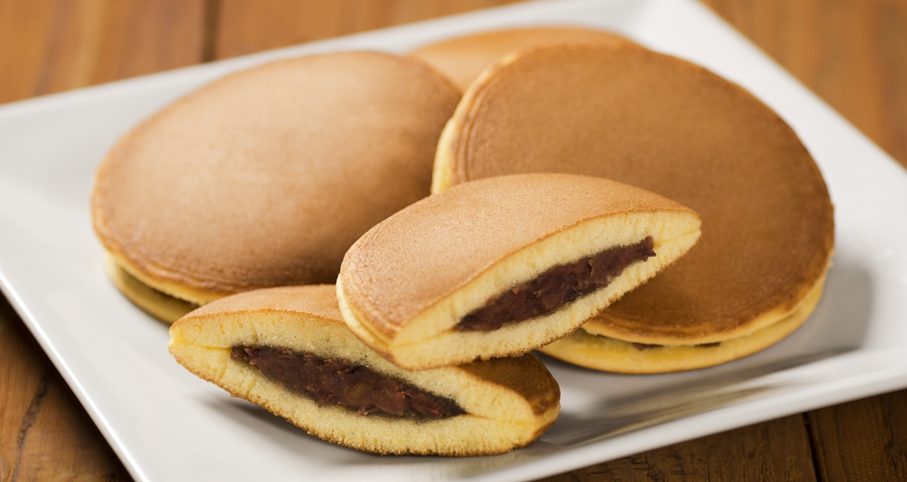

Dorayaki
Japanese Swee-Filled Pancakes
Ingredients
- 2 large eggs
- 2/3 cup sugar
- 1/2 teaspoon baking soda
- 3 tablespoons water, or milk
- 1 cup sifted all-purpose flour
- Vegetable oil, for frying
- 3/4 pound anko (sweet azuki bean paste)
Preparation
- Put eggs and sugar in a bowl and whisk very well.
- Dissolve baking soda in water.
- Add water into egg mixture.
- Add sifted flour into egg mixture gradually.
- Heat frying pan and lightly oil it.
- Pour a scoop of the batter into the frying pan and make a small pancake (about 3 to 4 inches in diameter).
- Turn over when bubbles appear on the surface.
- Repeat this process for each pancake.
- Cool the pancakes.
- Make pairs of pancakes, and put a scoop of anko sweet beans between them.